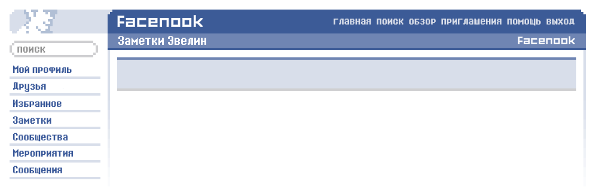

штуковина для опросов
12 Октября, 2006 в 21:23
Готовы ли вы говорить всю правду и ничего, кроме правды??
естественно, чееел
Вспомните свои последние десять поцелуев - все ли они были с одним и тем же человеком?
кто вообще считает поцелуи?
С кем вы в последний раз делили одеяло?
вроде с Джеки
Кто-нибудь видел, как ты целовалась в последний раз?
не думаю
Кто последним звонил вам??
снова Джеки =Р
Как ты себя чувствуешь?
норм
Как выглядят твои волосы?
противно, я ещё не принимала душ
Вы бы когда-нибудь пробовали стать вегетарианцем?
Да, сэр, я одна из них!
Что вы всегда носите с собой?
Э-э-э, моя сумочка, в которой лежат мой кошелек, iPod, мобильный телефон, зажигалка и, как правило, сигареты
Вы когда-нибудь делали что-то особенное, чтобы кого-то порадовать?
Да, что это за вопрос такой?
Есть какие-нибудь планы на лето?
до лета ещё далеко
Вы верите, что подростки могут влюбиться?
да
Будете ли Вы в отношениях в следующем месяце?
я не знаю
Означает ли секс - любовь?
нет
Что ты планируешь на свой следующий день рождения?
пока не знаю
Что у тебя на ногах?
ничего! они совершенно голые!
Какие у тебя планы на завтра?
наверное, буду тусоваться с кем-нибудь
Сколько лет твоим братьям и сестрам, если они у тебя есть?
23 и 31 или что-то в этом роде
Твой день рождения наступит менее чем через 6 месяцев?
э-э-э, да, с трудом, ха-ха
Что бы вы предпочли: оказаться на необитаемом острове со своим бывшим или с питоном?
с бывшим
Вы легко выходите из себя из-за представителей противоположного пола?
не легче, чем с представителями своего пола
Боишься щекотки?
конечно
Что или кто разбудил тебя сегодня утром?
будильник на моём телефоне
Признайся честно, ты ненавидишь ту девушку, с которой только что разговаривала?
Признаюсь честно - нет
Вы счастливее сейчас или три месяца назад?
ну, пожалуй, сейчас
Вы по-прежнему вместе с тем человеком, которого последним целовали в губы?
уже нет
Вы когда-нибудь гуляли по пляжу ночью?
конечно
Где вы в последний раз засыпали, кроме своей кровати?
наверное, кровать Джеки, но я не уверена
Как ты думаешь, целоваться — это признак распутства?
Ну, на публике, конечно, да
Как вы думаете, изменится ли ситуация в ближайшие несколько месяцев?
ага
Тот человек, которому ты последний раз писала, свободен?
да, она свободна
Кто это?
Джеки
Любимый цвет?
сегодня? скорее всего, сине-зелёный
Когда будет твой следующий поцелуй?
я не знаю
Какую песню ты слушаешь?
senses faail - calling cars
Во сколько Вы обычно ложитесь спать по будням?
гораздо позже, чем следовало бы, ха-ха
Когда вы предпочитаете принимать душ — утром или вечером?
обычно - ночью
Ты можешь смотреть фильмы ужасов?
могу, они же мои любимые!
Хочешь сделать пирсинг?
у меня уже есть, и татуировка
Что вы предпочитаете: оставаться дома или гулять?
почти всегда выберу гулять
Какого цвета у тебя футболка?
фиолетовая с ярко-жёлтым
Есть ли кто-нибудь, кто знает о вас всё или почти всё?
Да, конечно!
